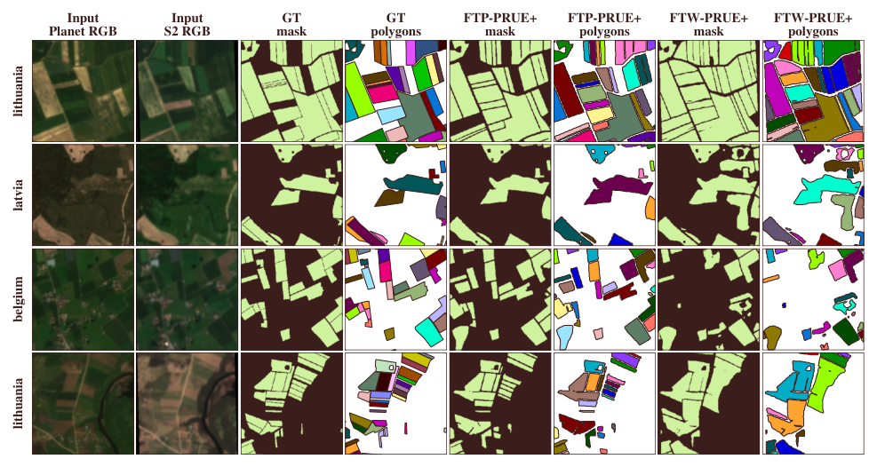
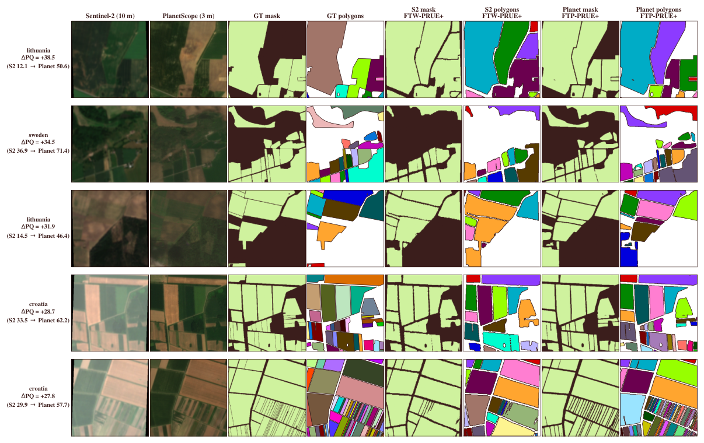

Agricultural field boundaries · 3 m PlanetScope
Fields of the Planet
Field boundary mapping beyond 10 m
A PlanetScope companion to Fields of The World (FTW) v2 · 2026

01What 3 m buys you
Under matched architectures and training recipes, moving from 10 m Sentinel-2 to 3 m PlanetScope improves polygon recovery and boundary localization — with the largest gains on the smallholder fields a 10 m grid cannot resolve.
02Why resolution changes the answer
Field boundaries feed crop-yield estimation, irrigation accounting, subsidy verification, and food-security monitoring — and they matter most where they are hardest to see. Roughly 510 million smallholder farms under 2 ha account for about 84% of the world's farms by count, yet their parcels span only a few 10 m Sentinel-2 pixels.
The limit shows up before any model runs: rasterizing FTW's own polygons onto a 10 m grid merges neighboring parcels. Only 7.5% of sub-0.5 ha fields survive as separable polygons at 10 m, versus 88.3% at 3 m. FTP keeps FTW's polygons, seasonal windows, and tile-level splits, and swaps the imagery for co-registered 3 m PlanetScope so the resolution effect can be measured in isolation.
We evaluate field delineation as parcel recovery: predictions are vectorized and scored as polygon objects — panoptic quality (PQ/SQ/RQ), object F1 over the COCO IoU grid, and meter-scale boundary error — rather than by pixel overlap, which understates the benefit of higher resolution.


03The dataset
FTP is released on Hugging Face and Source Cooperative — the same polygons and protocol as FTW, re-imaged at 3 m.
- Coverage
- 66,584 patches · 133,168 image-window pairs · 24 countries / 25 labeled regions
- Imagery
- PlanetScope
ortho_analytic_4b_sr— 4 bands (B/G/R/NIR), ~3 m GSD, native UTM,uint16 - Windows
- Two seasonal acquisitions per patch (planting & harvest)
- Labels
- 3-class raster (background / field interior / boundary) plus the original FTW vector polygons as GeoParquet
- Format
- One WebDataset tar per region (25 shards, ~94 GiB) + a GeoParquet index
- License
- CC-BY-NC 4.0 (inherits Planet's non-commercial terms); labels carry per-region FTW licenses
04Resources
The dataset is also mirrored on Source Cooperative at s3://us-west-2.opendata.source.coop/ftw/ftw-planet/.
05Citation
@inproceedings{corley2026ftp,
title = {Fields of the Planet: Field Boundary Mapping Beyond 10m},
author = {Corley, Isaac and Robinson, Caleb and
Marcus, Jennifer and Kerner, Hannah},
year = {2026}
}